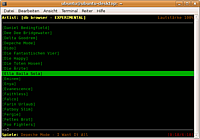

ncmpc
Dieser Artikel wurde für die folgenden Ubuntu-Versionen getestet:
Ubuntu 16.04 Xenial Xerus
Ubuntu 14.04 Trusty Tahr
Zum Verständnis dieses Artikels sind folgende Seiten hilfreich:
Ncmpc  ist ein auf ncurses basierender Client für den Music Player Daemon. Für Konsolen-Cowboys ist MPD im Zusammenspiel mit einem Konsolen-Client interessant, selbst wenn die Netzwerkfunktionalität von MPD gar nicht genutzt wird. MPD plus Client stellt einen mächtigen Audio-Player (in diesem Fall für die Kommandozeile) dar. Ein Vorteil ist beispielsweise, dass man den Client startet, die Playliste zusammenstellt und dann den Client wieder beenden kann. MPD spielt danach im Hintergrund weiterhin Musik ab.
ist ein auf ncurses basierender Client für den Music Player Daemon. Für Konsolen-Cowboys ist MPD im Zusammenspiel mit einem Konsolen-Client interessant, selbst wenn die Netzwerkfunktionalität von MPD gar nicht genutzt wird. MPD plus Client stellt einen mächtigen Audio-Player (in diesem Fall für die Kommandozeile) dar. Ein Vorteil ist beispielsweise, dass man den Client startet, die Playliste zusammenstellt und dann den Client wieder beenden kann. MPD spielt danach im Hintergrund weiterhin Musik ab.
ncmpcpp ist eine unabhängige Weiterentwicklung, die etliche weitere Möglichkeiten bietet, so z.B. einen Tag-Editor, Bearbeitung von Playlisten (mit der Möglichkeit, Tracks, Alben oder Künstler zufällig aufzunehmen), einfacher Suche, Infos über Lastfm, Visualisierung u.a.m.
Installation¶
Folgendes Paket wird über die Paketverwaltung installiert[1]:
ncmpc (universe)
 mit apturl
mit apturl
Paketliste zum Kopieren:
sudo apt-get install ncmpc
sudo aptitude install ncmpc
Benutzung¶

Starten und verbinden¶
Falls der MPD-Server und ncmpc auf dem selben Rechner installiert sind startet man das Programm über den Befehl[2]:
ncmpc
Dabei benutzt das Programm die Voreinstellung localhost:6600 für die Verbindung zum Server. Über die Umgebungsvariablen MPD_HOST und MPD_PORT lässt sich dieser Wert ändern oder man nutzt dazu entsprechende Parameter:
ncmpc -h MPDSERVER -p PORT
Ein Passwort wird hierbei in der Form PASSWORT@MPDSERVER übergeben. Ein vollständiger Aufruf könnte wie folgt aussehen:
ncmpc -h geheim@192.168.1.50 -p 6600
Mit diesem Aufruf überschreibt man auch die Standard-Verbindungsangaben, welche in der Konfiguration festgelegt werden können. Weitere Start-Parameter sind in der Manpage aufgeführt.
Bedienung¶
Die Bedienung von ncmpc erfolgt über Tasten, man kann aber in der Konfiguration zusätzlich Maus-Unterstützung aktivieren. ncmpc verfügt über eine Vielzahl von Funktionen und dementsprechend ist die Tastatur-Belegung eine lange Liste, die man den eigenen Wünschen entsprechend anpassen kann. Einige der voreingestellten Tastenkürzel für die grundlegende Orientierung im Programm sind hier aufgeführt:
| Taste | Fenster |
| 1 | Hilfe - Übersicht über die Tastaturbelegung |
| 2 | Playliste |
| 3 | Stöbern in der Bibliothek |
| 4 | Anzeige nach Künstler |
| 5 | Suche |
| ⇧ + K | Tastaturbelegung bearbeiten |
Bei Tastatur-Kürzeln mit Buchstaben muss man die Groß-/Kleinschreibung beachten. Also wird beispielsweise das P für "Pause" mit
⇧ +
P eingegeben.
Konfiguration¶
Möchte man zusätzliche Features nutzen, oder manche Einstellungen fest abspeichern, so kann man die Konfiguration im Homeverzeichnis unter ~/.ncmpc/config oder systemweit unter /etc/ncmpc/config erstellen. Das jeweilige Verzeichnis muss noch angelegt werden. Für die systemweite Konfiguration werden Root-Rechte benötigt[3].
Es existiert eine Vorlage für die Konfigurations-Datei, die man noch entpacken[4] und an die passende Stelle kopieren muss. Dies geht für die Benutzer-Konfiguration beispielsweise mittels zcat und einer Umleitung der Ausgabe in die gewünschte Datei:
mkdir ~/.ncmpc; zcat /usr/share/doc/ncmpc/examples/config.sample.gz > ~/.ncmpc/config
Bei älteren Versionen ist die Datei ggf. nicht gepackt und muss nur kopiert werden.
Anschließend kann man die Datei ~/.ncmpc/config bearbeiten [5] und z.B. die farbige Darstellung des Clients aktivieren und verändern, Maus-Unterstützung aktivieren und einiges mehr. Auch die Verbindungsangaben zum MPD-Server können hier festgelegt werden.
- Erstellt mit Inyoka
-
 2004 – 2017 ubuntuusers.de • Einige Rechte vorbehalten
2004 – 2017 ubuntuusers.de • Einige Rechte vorbehalten
Lizenz • Kontakt • Datenschutz • Impressum • Serverstatus -
Serverhousing gespendet von